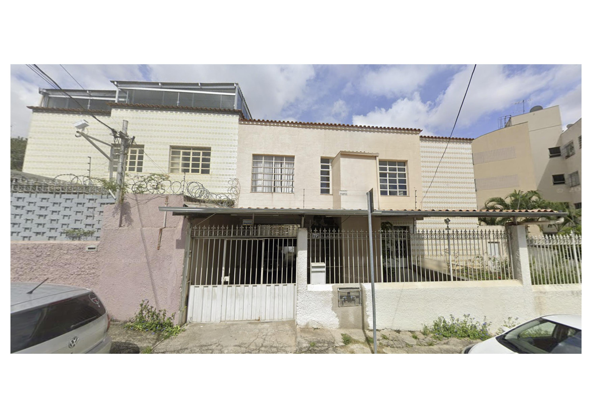
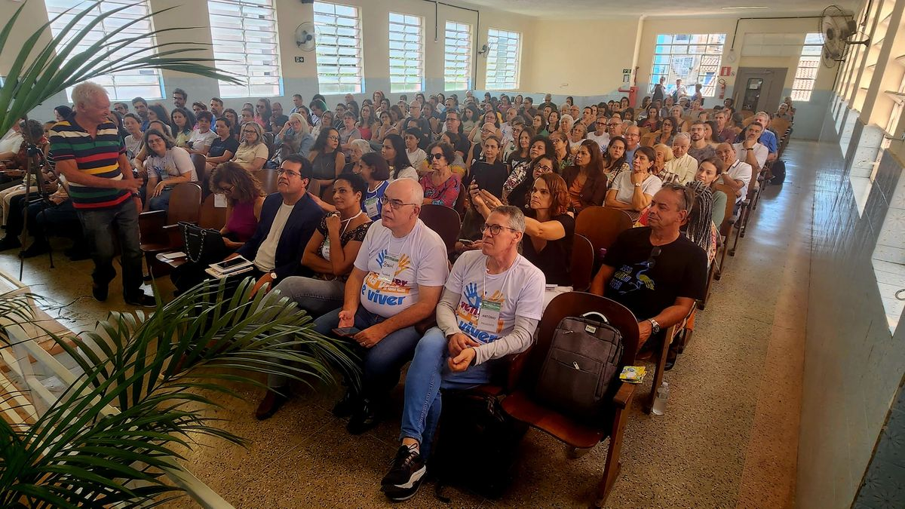
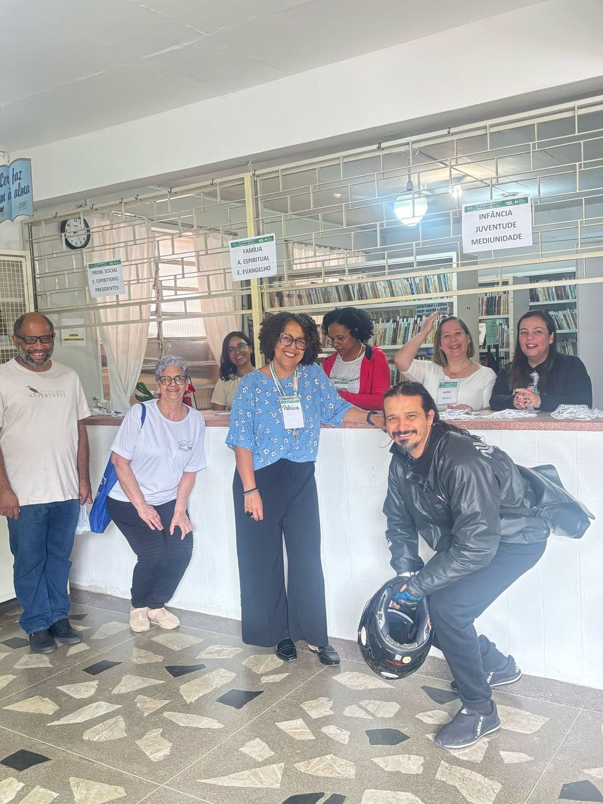
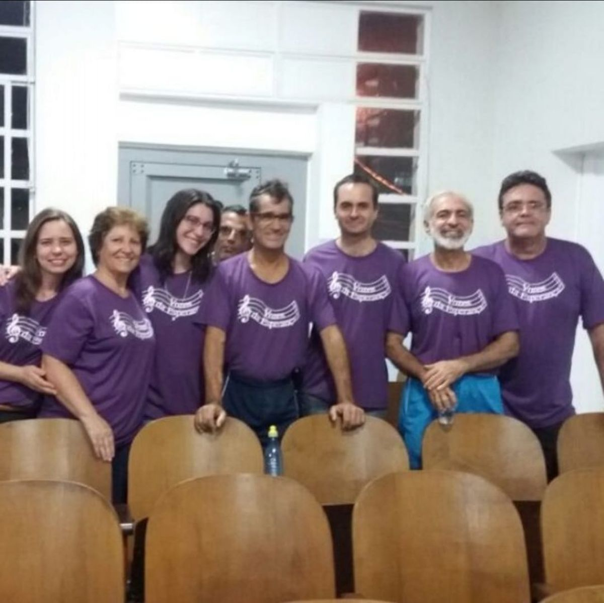

Participe de nossas reuniões públicas, grupos de estudo, atividades sociais e conheça uma casa aberta a todos que buscam aprendizado, conforto e crescimento espiritual.
O Centro Espírita é uma casa aberta a todos, dedicada ao estudo da Doutrina Espírita, ao acolhimento das pessoas e à assistência espiritual. Ao longo dos anos, construímos um espaço de aprendizado e fraternidade, onde reuniões públicas, grupos de estudo e trabalhos sociais caminham lado a lado — sempre com a mesma missão: acolher, ensinar e servir.
Mais do que um local de estudo, somos uma comunidade que se dedica ao bem-estar de quem passa pelas nossas portas e da comunidade ao nosso redor.



Não é necessário ser espírita nem realizar qualquer inscrição para participar das reuniões públicas. Nossa casa está de portas abertas para acolher todas as pessoas que desejam conhecer a Doutrina Espírita, participar das atividades ou simplesmente buscar um ambiente de paz e reflexão.
Conheça nossas atividades →Não. Nossa casa está de portas abertas para qualquer pessoa, independentemente de religião ou experiência anterior com a Doutrina Espírita.
Não. Todas as reuniões públicas e atividades assistenciais são gratuitas e abertas à comunidade.
É um tratamento espiritual oferecido durante as reuniões públicas, com o objetivo de trazer conforto e equilíbrio para quem participa.
É um momento de conversa individual, acolhimento e orientação à luz da Doutrina Espírita, o agendamento é feito por mensagem no WhatsApp (31) 3461-2636, e a nossa equipe orienta sobre horários e próximos passos.
Sim! Temos a Evangelização Infantil, um espaço dedicado às crianças com atividades apropriadas para cada faixa etária, todas as segundas-feiras.
Oferecemos grupos de estudo presenciais e online, voltados ao aprendizado e aprofundamento da Doutrina Espírita. Os estudos presenciais (ESDE e EADE) acontecem às terças-feiras, das 20h às 21h30. Às quintas-feiras temos os cursos online: Curso Básico da Doutrina Espírita e Curso de Mediunidade (básico e avançado).
Você pode ajudar como voluntário nas ações sociais, doando alimentos na Campanha do Quilo, participando do Bazar Beneficente ou contribuindo com a manutenção da casa.